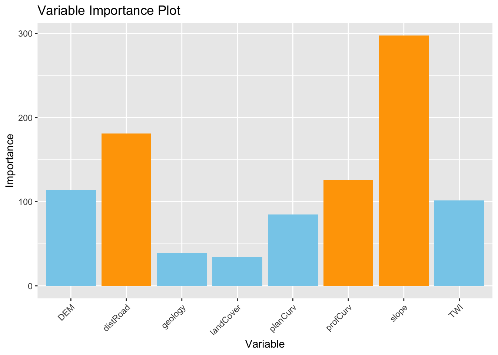
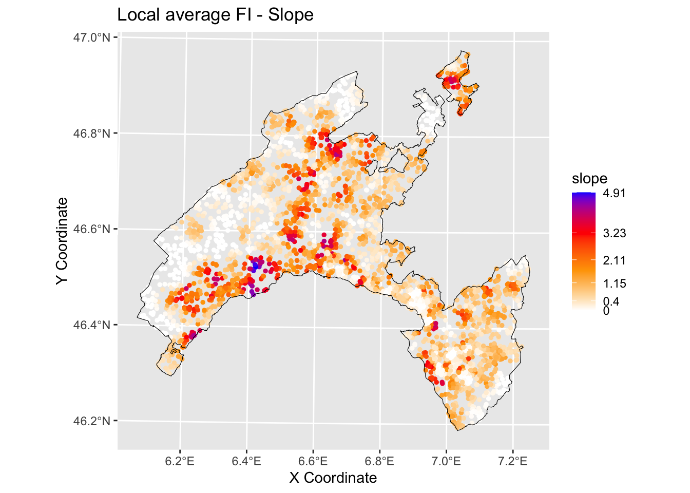
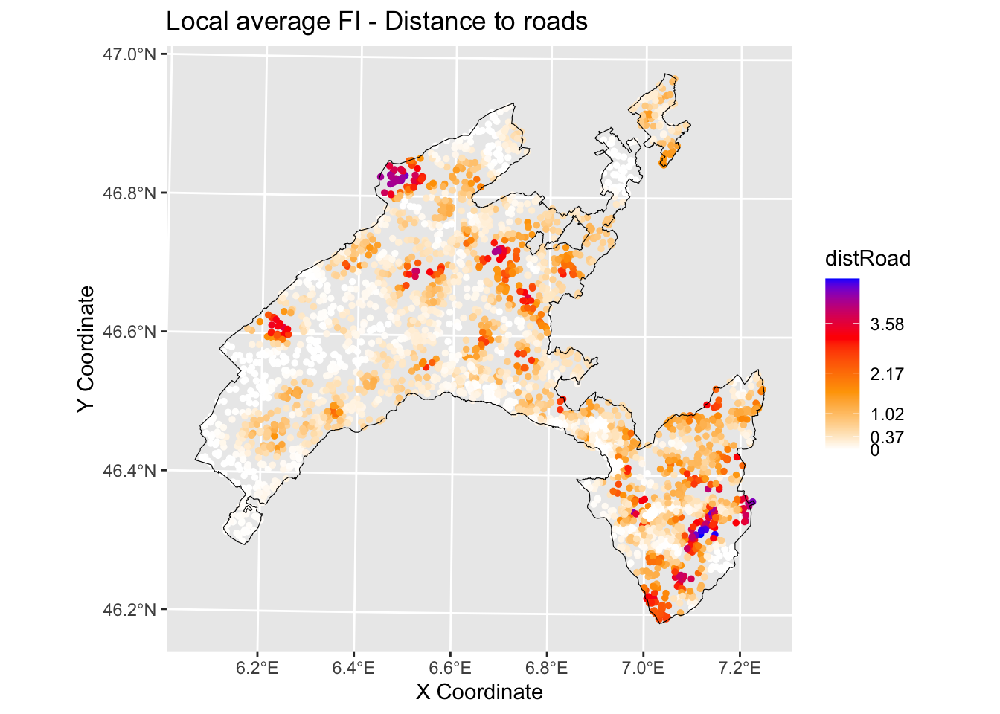
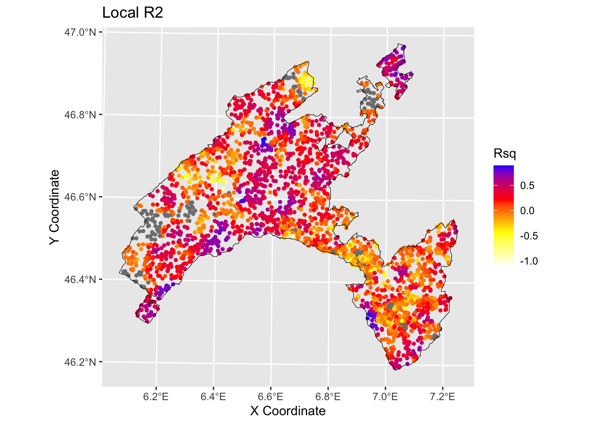

Chapter 16 2) Local Random Forest
Standard machine learning algorithms like Random Forest (RF) lack spatial calibration, hindering capturing the spatial non-stationarity in the relationship between a dependent and a set of independent variables.
To account for the spatial heterogeneity (i.e. non-stationarity) when modeling landslides spatial patterns as function of geographical features, in the present work we explore the local feature importance of geographical independent predisposing variables on the spatial distribution of landslides in canton Vaud (Switzerland).
We adopted Geographically Random Forest (GRF), a spatial analysis method using a local version of RF algorithm13 . This is achieved by fitting a sub-model for each observation in space, taking into account the neighbouring observations. GRF can model the non-stationarity coupled with a non-linear model (RF) which tends not to overfit due to its bootstrapping nature. In addition it is suited for datasets with numerous predictors.
Essentially, GRF was designed to be a bridge between machine learning and geographical models, combining inferential and explanatory power.
16.1 2.1) Run GRF
We will use the last development of Geographical Random Forest (GRF) [4]. This function have been implemented for regression problem, so we need to transform our binary response variable (i.e., presence=1 / absence = 0) as a numeric value which can assume a range of values from zero to one.
## 'data.frame': 5188 obs. of 11 variables:
## $ distRoad : num 160.1 55.9 106.1 70.7 125 ...
## $ DEM : num 443 451 460 458 463 ...
## $ landCover: Factor w/ 7 levels "11","15","21",..: 3 1 2 2 3 1 3 3 3 1 ...
## $ TWI : num 7.4 8.72 9.08 8.55 8.33 ...
## $ planCurv : num -0.000143 0.003633 0.005981 0.006165 0.000217 ...
## $ profCurv : num 0.013297 -0.006447 0.000381 -0.001675 -0.005383 ...
## $ slope : num 20.86 2.91 2.04 3.46 4.32 ...
## $ geology : Factor w/ 11 levels "0","1","2","7",..: 8 8 8 8 8 8 8 8 8 8 ...
## $ x : num 567887 568087 567912 567962 567812 ...
## $ y : num 2e+05 2e+05 2e+05 2e+05 2e+05 ...
## $ LS : Factor w/ 2 levels "0","1": 2 2 2 2 2 2 2 2 2 2 ...## 'data.frame': 4150 obs. of 12 variables:
## $ distRoad : num 182 25 90.1 212.1 134.6 ...
## $ DEM : num 917 719 662 498 810 ...
## $ landCover: Factor w/ 7 levels "11","15","21",..: 5 5 1 3 3 3 3 2 5 3 ...
## $ TWI : num 8.15 8.47 8.73 15.52 8.98 ...
## $ planCurv : num 0.000789 0.003464 0.000962 -0.00004 0.000359 ...
## $ profCurv : num 7.89e-04 -1.17e-02 -7.98e-04 -3.99e-05 -4.42e-04 ...
## $ slope : num 28.31 33.15 2.88 1.94 4.49 ...
## $ geology : Factor w/ 11 levels "0","1","2","7",..: 7 4 8 2 2 8 8 2 2 8 ...
## $ x : num 569837 561612 540062 504862 548312 ...
## $ y : num 133062 139887 154237 140712 169212 ...
## $ LS : Factor w/ 2 levels "0","1": 2 2 2 1 1 2 2 2 1 1 ...
## $ LSregr : num 1 1 1 0 0 1 1 1 0 0 ...## 'data.frame': 1038 obs. of 12 variables:
## $ distRoad : num 90.1 956.9 55.9 70.7 25 ...
## $ DEM : num 490 1299 850 480 1338 ...
## $ landCover: Factor w/ 7 levels "11","15","21",..: 3 5 5 1 3 3 2 3 1 4 ...
## $ TWI : num 10.14 9.19 9.74 10.78 10.51 ...
## $ planCurv : num 0.005263 0.002523 -0.005231 -0.000883 0.001165 ...
## $ profCurv : num -0.010737 -0.003077 0.008209 0.000877 0.000685 ...
## $ slope : num 12.51 1.82 18.31 5.2 12.48 ...
## $ geology : Factor w/ 11 levels "0","1","2","7",..: 8 3 8 2 2 8 2 2 8 5 ...
## $ x : num 529962 501762 552912 545262 572112 ...
## $ y : num 160712 149912 148212 189712 135962 ...
## $ LS : Factor w/ 2 levels "0","1": 2 1 2 1 2 1 2 1 2 1 ...
## $ LSregr : num 1 0 1 0 1 0 1 0 1 0 ...Coords<-LS_train[,9:10] # define coordinates
# Run GRF
set.seed(123) # initialize
gwRF_LS<-grf(LSregr~distRoad+DEM+landCover+TWI+planCurv+profCurv+slope+geology, LS_train, bw=40, mtry=3, kernel="adaptive",coords=Coords)## Ranger result
##
## Call:
## ranger(LSregr ~ distRoad + DEM + landCover + TWI + planCurv + profCurv + slope + geology, data = LS_train, num.trees = 500, mtry = 3, importance = "impurity", num.threads = NULL)
##
## Type: Regression
## Number of trees: 500
## Sample size: 4150
## Number of independent variables: 8
## Mtry: 3
## Target node size: 5
## Variable importance mode: impurity
## Splitrule: variance
## OOB prediction error (MSE): 0.117128
## R squared (OOB): 0.5315825
## distRoad DEM landCover TWI planCurv profCurv slope geology
## 181.93889 113.22987 33.98818 101.59075 83.15042 123.31246 302.83349 39.09378
## Min. 1st Qu. Median Mean 3rd Qu. Max.
## -1.00000 -0.03162 0.00000 -0.01882 0.03284 1.00000
## Min. 1st Qu. Median Mean 3rd Qu. Max.
## -0.3981333 -0.0030000 0.0000000 -0.0003047 0.0042917 0.2957333
## Min Max Mean StD
## distRoad 0 4.846175 0.6640442 0.8686210
## DEM 0 4.442619 0.7486061 0.7680691
## landCover 0 4.301103 0.1936414 0.3141822
## TWI 0 4.284581 0.6287907 0.6790622
## planCurv 0 3.126327 0.4565076 0.4888202
## profCurv 0 4.048531 0.5832407 0.6300842
## slope 0 4.913916 0.9080469 0.9518115
## geology 0 3.669751 0.2213336 0.403873316.1.1 2.1.1) Global variable importance plot
Based on the results of the GRF, we present a plot of the variable importance ranking for illustrative purposes. Values came from “Global ML Model Summary” - “Importance.
# Create a data frame with variable names and importance values
variable_importance <- data.frame (
Variable = c("distRoad", "DEM", "landCover", "TWI", "planCurv", "profCurv", "slope", "geology"),
Importance = c(181.18490, 114.32444, 34.23643, 101.51863, 84.81667, 125.93651, 297.74411, 39.22721 ) # Importance - Global ML
)
# Assign different colors to the top three important variables
variable_importance$Color <- ifelse(variable_importance$Importance >= sort(variable_importance$Importance, decreasing = TRUE)[3], "orange", "skyblue")
# Create a bar plot for variable importance with different colors for the top three variables
ggplot(data = variable_importance, aes(x = Variable, y = Importance, fill = Color)) +
geom_bar(stat = "identity") +
scale_fill_identity() +
labs(title = "Variable Importance Plot", x = "Variable", y = "Importance") +
theme(axis.text.x = element_text(angle = 45, hjust = 1)) # Rotate x-axis labels for better readability
16.1.3 - Slope
# Create a data frame with the values of the local variables importance and the coordinates for each location¨
gwRF_LS_var<-gwRF_LS$Local.Variable.Importance
gwRF_LS_var_XY<-cbind(gwRF_LS_var,LS_train$x,LS_train$y ) # add coordinates
colnames(gwRF_LS_var_XY)[9]<- "X" #rename column X-coordinate
colnames(gwRF_LS_var_XY)[10]<- "Y" #rename column Y-coordinate
str(gwRF_LS_var_XY) ## 'data.frame': 4150 obs. of 10 variables:
## $ distRoad : num 0.53312 0.00351 0.31458 0.07548 2.46608 ...
## $ DEM : num 1.11112 0.00548 0.13488 0.79269 0.66155 ...
## $ landCover: num 0.1857 0.0072 0.0856 0.6757 0.0124 ...
## $ TWI : num 0.2571 0.0425 1.1416 0.2105 0.392 ...
## $ planCurv : num 0.20406 0.00112 0.12462 0.84817 1.17041 ...
## $ profCurv : num 0.1011 0.0032 0.2125 1.6097 2.5097 ...
## $ slope : num 0.3679 0.0269 0.6325 0.6656 0.9508 ...
## $ geology : num 0.078629 0.000606 0.09991 0.572837 0.01066 ...
## $ X : num 569837 561612 540062 504862 548312 ...
## $ Y : num 133062 139887 154237 140712 169212 ...library(sf) #for spatial data operations
# Convert vector to sf (simple feature)
Vaud<-vect("data/RF/Vaud_CH.shp")
Vaud_sf<-st_as_sf(Vaud)
# Output predicted values are transformed to a vector
pred.vect <- as.vector(gwRF_LS_var_XY$slope)
library(classInt) #for classification
brk<-(classIntervals(pred.vect, n=5, style = "fisher"))
brkInt<-round(brk$brks, digits=2)
print(brkInt)## [1] 0.00 0.39 1.00 1.81 2.99 4.91#natural breaks (fisher)
ggplot() +
geom_point(data = gwRF_LS_var_XY, aes(x = X, y = Y, colour = slope), size = 1) +
scale_color_gradientn(colors = c("white", "orange","red", "blue"),
breaks = c(0.00, 0.40, 1.15, 2.11, 3.23, 4.91),
labels=c(0.00, 0.40, 1.15, 2.11, 3.23, 4.91)) +
labs( x = "X Coordinate", y = "Y Coordinate")+
ggtitle("Local average feature importance")+
geom_sf(data = Vaud_sf, fill = "transparent", color = "black", size=2) #overlap borders
16.1.4 - Distance to roads
# Output predicted values are transformed to a vector
pred.vect <- as.vector(gwRF_LS$Local.Variable.Importance$distRoad)
brk<-(classIntervals(pred.vect, n=5, style = "fisher"))
brkInt<-round(brk$brks, digits=2)
print(brkInt) # print breaks## [1] 0.00 0.36 0.98 2.04 3.33 4.85#natural breaks (fisher)
ggplot() +
geom_point(data = gwRF_LS_var_XY, aes(x = X, y = Y, colour = distRoad), size = 1) +
scale_color_gradientn(colors = c("white", "orange","red", "blue"),
breaks = c(0.00, 0.37, 1.02, 2.17, 3.58, 4.85),
labels=c(0.00, 0.37, 1.02, 2.17, 3.58, 4.85)) +
labs( x = "X Coordinate", y = "Y Coordinate")+
ggtitle("Local average feature importance")+
geom_sf(data = Vaud_sf, fill = "transparent", color = "black", size=2) #overlap borders
16.2 2.1.3) Local R squared
The Local R-squared value ranges from 0 to 1 and represents the strength of the correlations of the local model on the features.
Rsq<-gwRF_LS$LGofFit$LM_Rsq100
Rsq_XY<-as.data.frame(cbind(Rsq,LS_train$x,LS_train$y)) # add coordinates
colnames(Rsq_XY)[2]<- "X"
colnames(Rsq_XY)[3]<- "Y"
str(Rsq_XY)## 'data.frame': 4150 obs. of 3 variables:
## $ Rsq: num -0.2341 -0.0148 -0.2604 0.2742 0.5882 ...
## $ X : num 569837 561612 540062 504862 548312 ...
## $ Y : num 133062 139887 154237 140712 169212 ...ggplot () +
geom_point(data = Rsq_XY, aes(x = X, y = Y, colour = Rsq), size = 1)+
scale_color_gradientn(colors = c("white", "yellow","red", "blue"))+
labs(title = "Rsq", x = "X Coordinate", y = "Y Coordinate")+
ggtitle("Local R2")+
geom_sf(data = Vaud_sf, fill = "transparent", color = "black", size=2) #overlap borders